This stall highlights the role of the Indian Army and NCC in nation building, discipline, and leadership. It showcases career opportunities, training programs, and the values of service, courage, and patriotism.
Join Indian Army
The ISRO stall presents India’s achievements in space science and technology. It provides insights into satellites, launch vehicles, and ongoing missions that contribute to communication, navigation, and scientific research.
Visit ISRO
This stall demonstrates the fundamentals and applications of robotics in modern technology. Visitors can explore student-made robotic models and learn how automation and artificial intelligence are shaping the future.
This stall offers a wide collection of professional, academic, and reference books. It encourages students to develop reading habits and gain knowledge beyond the classroom.
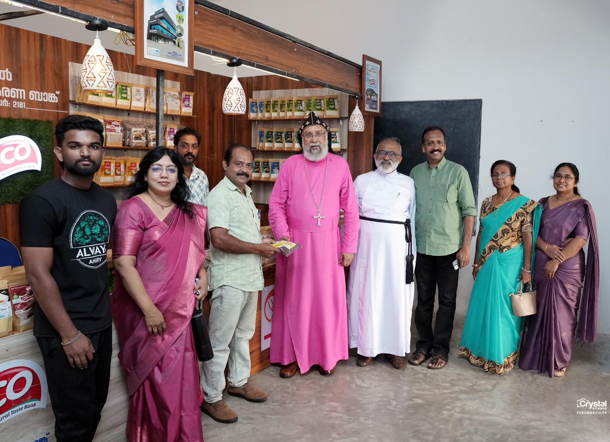
This stall showcases a variety of agricultural and value-added agro products promoted by the Okkal Service Society. It highlights sustainable farming practices and the importance of supporting local farmers.

This stall features live demonstrations of traditional clay pottery making. It reflects India’s rich cultural heritage and the skill involved in creating eco-friendly handcrafted products.
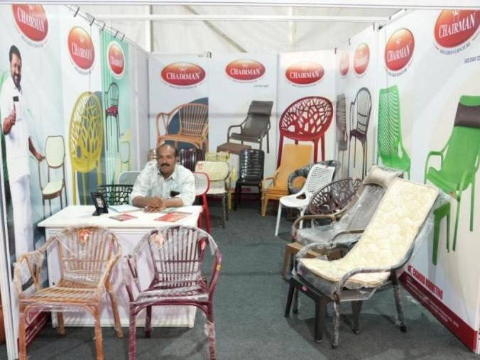
This stall displays a range of chairs designed for comfort and functionality. It highlights innovation in furniture design and the importance of ergonomics in everyday use.
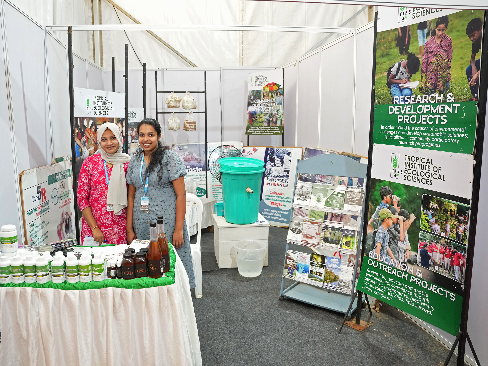
This stall introduces the work of the Tropical Institute of Ecological Sciences (TIES) in biodiversity conservation and ecological research. It highlights studies on tropical ecosystems, environmental sustainability, and the importance of preserving natural resources for future generations.
Visit TIES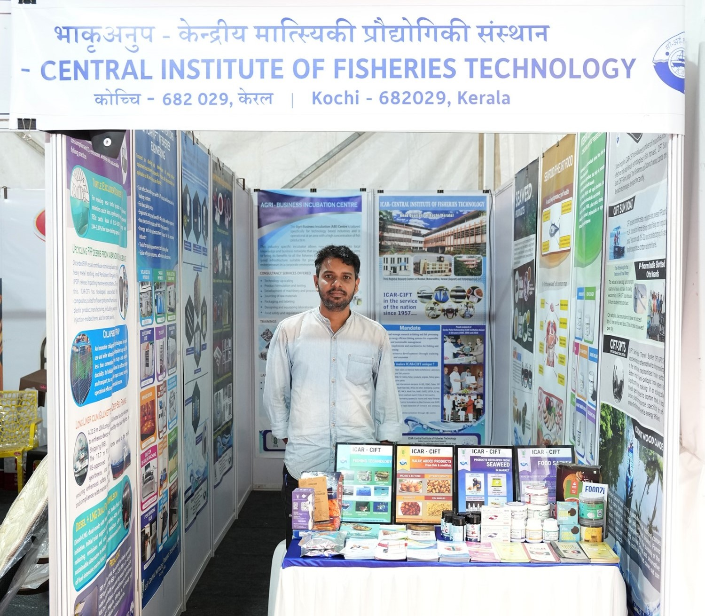
This stall showcases the research and innovations of the Central Institute of Fisheries Technology (CIFT) in fisheries and seafood processing. It highlights sustainable fishing practices, modern processing techniques, and technologies that enhance quality, safety, and value of fishery products..
Visit CIFTAdd description
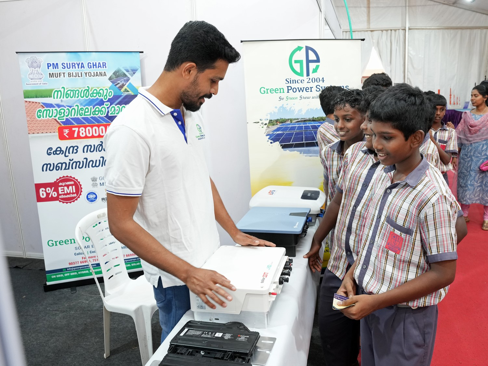
This stall presents solar energy solutions offered by Green Power Solar. It highlights the importance of renewable energy and demonstrates how solar installations contribute to sustainable and eco-friendly power generation
Visit Green PowerThis stall showcases biogas plant technology and its role in converting organic waste into clean energy. It emphasizes sustainable waste management and the environmental benefits of biogas as a renewable fuel.
This stall displays a variety of dress materials produced by Kudumbasree units. It highlights women empowerment, self-reliance, and quality products made through community-based initiatives.
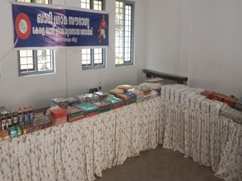
This stall features Khadi dress materials that represent India’s heritage of hand-spun and hand-woven fabrics. It promotes sustainable fashion and supports rural artisans and traditional industries.

This stall introduces the academic and research activities of KUFOS in fisheries and ocean studies. It highlights education, innovation, and sustainable management of marine and aquatic resources.
Visit KUFOSThis stall showcases apiculture practices and natural honey products from Keezhillam Honey Bee Farm. It highlights the role of honey bees in pollination, agriculture, and biodiversity conservation.
This stall presents eco-friendly products and initiatives by the Kerala Forest Department under the Vanasree brand. It emphasizes forest conservation, sustainable livelihoods, and responsible use of forest resources.
This stall displays exhibits prepared by U3A, highlighting lifelong learning and community engagement. It showcases creative, educational, and skill-based projects developed through collaborative efforts.
This stall features a collection of handcrafted products made by local artisans under CARD initiatives. It promotes traditional craftsmanship, creativity, and sustainable livelihood opportunities.
This stall showcases traditional bamboocrafts, spices, and products made by tribal communities. It highlights indigenous skills, sustainable practices, and the rich cultural heritage of tribal livelihoods.
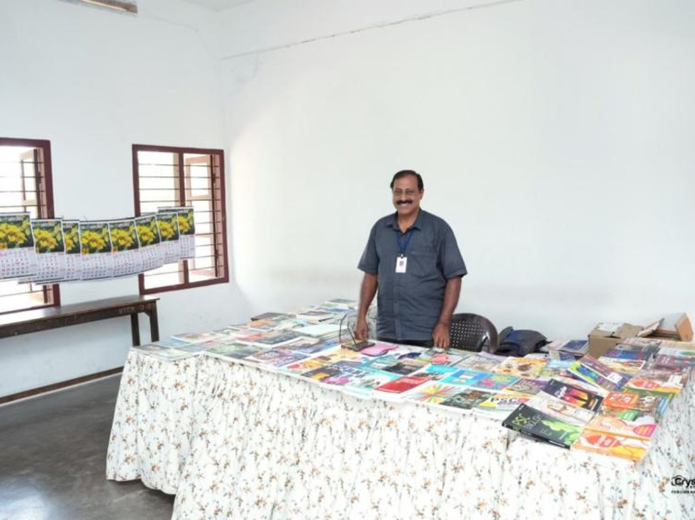
This stall presents the role of Malayala Manorama as a leading media organization in journalism and public awareness. It highlights print and digital media, news reporting, and career opportunities in the media field.
Visit Malayala Manorama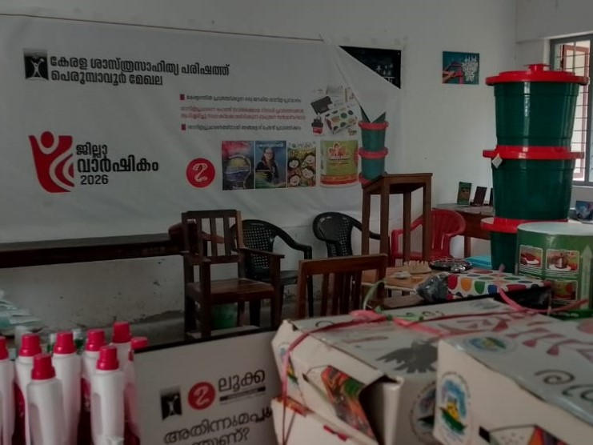
This stall introduces the activities of Kerala Sasthra Sahithya Parishad in promoting science, rational thinking, and social awareness. It highlights science communication, environmental initiatives, and community-based education.
Visit Kerala Sasthra Sahithya Parishad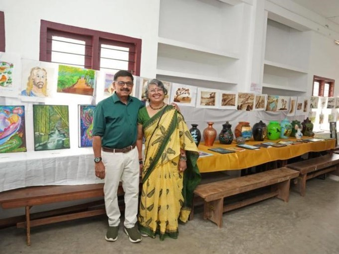
This stall displays artistic paintings created by Ms. Letha. It reflects creativity, visual expression, and the role of art in cultural and intellectual enrichment.
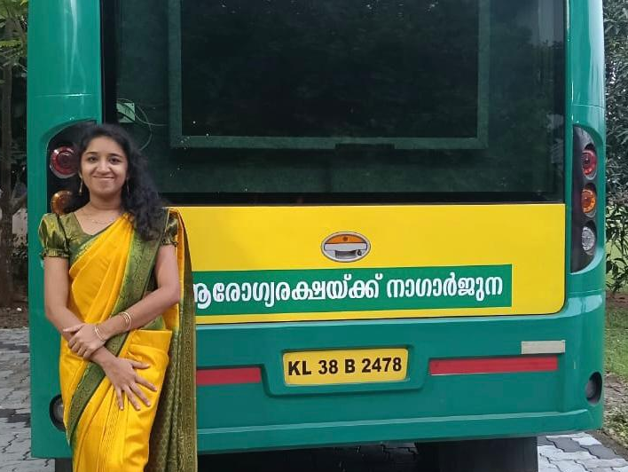
This stall displays artistic paintings created by Ms. Letha Prem Sakhya. It reflects creativity, visual expression, and the role of art in cultural and intellectual enrichment.
This stall introduces medical coding as a career-oriented field in the healthcare industry. It highlights professional training opportunities and the importance of accurate medical data management.
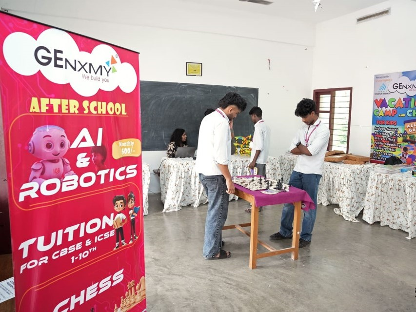
This stall showcases innovative STEM projects developed by Genxmy. It encourages hands-on learning in science, technology, engineering, and mathematics through practical demonstrations.
Visit GenxmyThis stall highlights the services of the Indian Postal Department, including communication, banking, and logistics. It emphasizes the department’s role in connecting communities across the country.

This stall presents the functions and services of the Kerala Fire and Rescue Department. It highlights disaster management, fire safety awareness, and emergency response systems.
Visit Kerala Fire and Rescue Services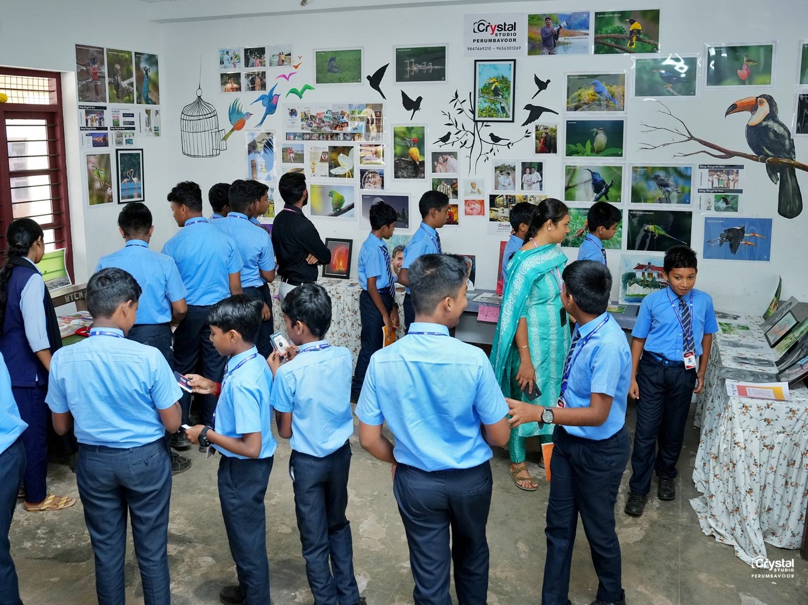
This stall showcases creative photographs captured by Mr. Binoy. It highlights the art of photography and its role in visual storytelling and creative expression.
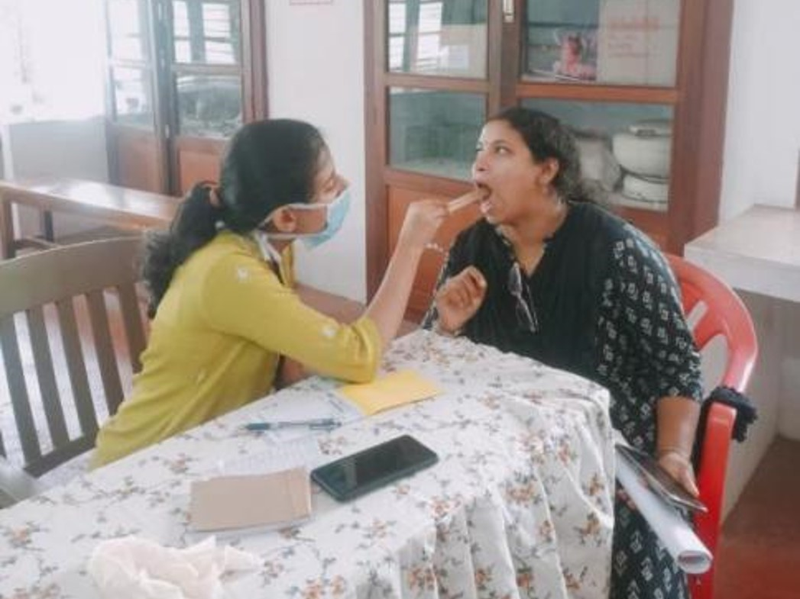
This stall provides information and basic awareness on dental health and hygiene organized by Sree Bhavani Foundations. It emphasizes the importance of oral care and preventive dental practices.
Visit Sree Bhavani FoundationThis stall presents the activities of the Break Through Science Society in promoting scientific temper and rational thinking. It highlights science education initiatives and community-based outreach programs.

These stalls offer a variety of food items for visitors. They add to the exhibition experience by providing refreshments and showcasing local flavors.
This stall offers a selection of Camerry ice creams for visitors of all age groups. It provides a refreshing treat and adds enjoyment to the exhibition atmosphere.
This stall provides awareness and demonstrations on basic first aid practices by Aster Medicity. It highlights emergency response skills and the importance of timely medical assistance in saving lives.
This stall showcases a variety of flowers and ornamental plants cultivated by Kudumbasree units. It highlights eco-friendly gardening practices and women-led community initiatives.
This stall offers a range of tasty snacks by Tasty Nibbles for visitors. It adds flavor and enjoyment to the exhibition with quick and delicious refreshments.
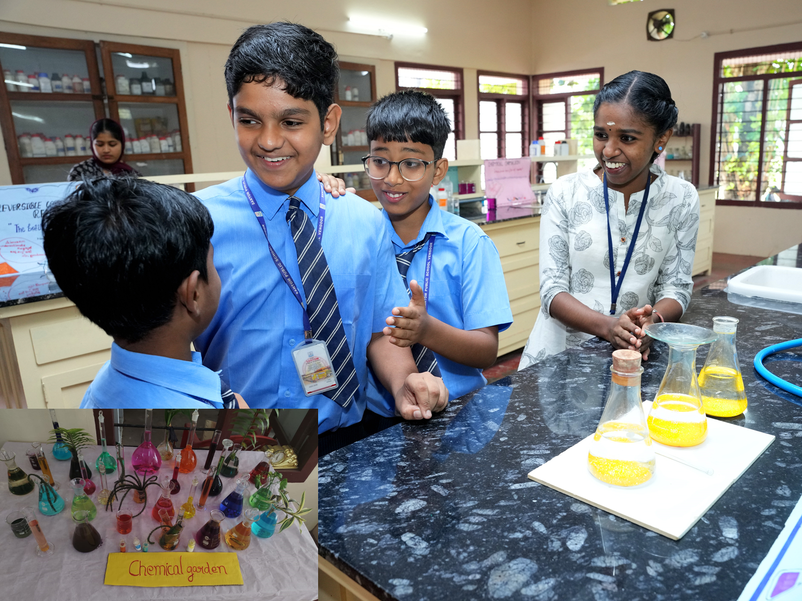
This stall presents experiments and models related to chemical sciences. It emphasizes the role of chemistry in industry, healthcare, and environmental sustainability.
Visit Chemistry Department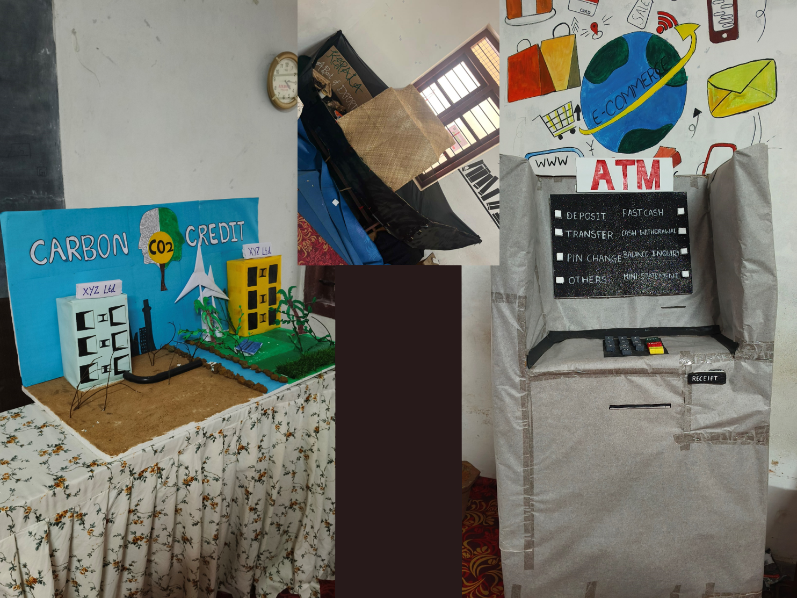
This stall showcases concepts related to finance, accounting, and taxation. It highlights career opportunities and the practical importance of financial literacy.
Visit Commerce - Finance & Taxation and Accounting DepartmentThis stall presents the principles and functioning of the co-operative sector. It highlights the role of co-operatives in economic development and social welfare.
Visit Commerce - Co Operation Department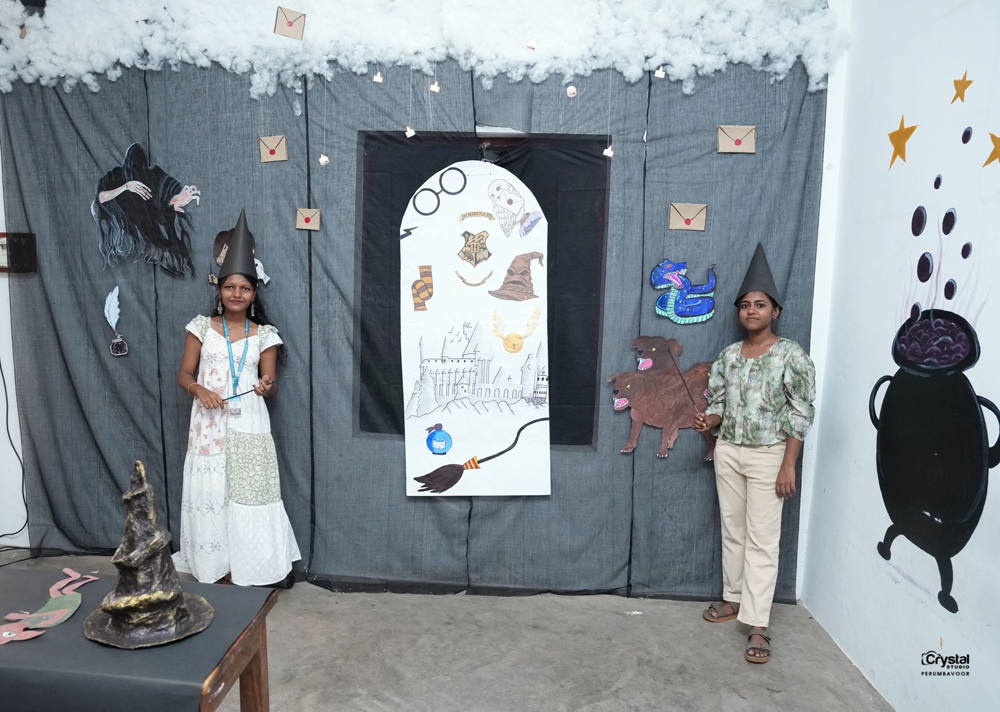
This stall showcases literature, language, and communication skills. It highlights the role of English studies in creativity, critical thinking, and global communication.
Visit English Department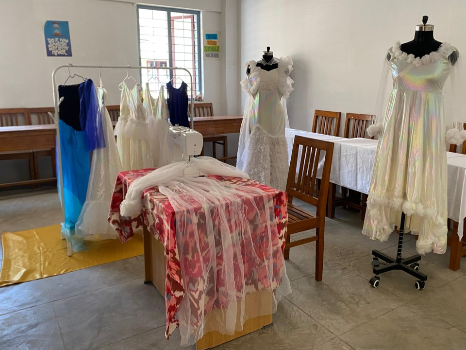
This stall showcases fashion design concepts and creative works by students. It highlights skills in design, textiles, and the evolving fashion industry.
Visit Fashion Technology and Merchandizing DepartmentThis stall displays historical records, artifacts, and archaeological insights. It highlights the study of past civilizations and the importance of preserving cultural heritage.
Visit History, Archaeology, & Museology Department
This stall showcases artifacts, models, and exhibits related to ancient civilizations and archaeological discoveries. It highlights the importance of preserving historical heritage and understanding human history through material evidence.
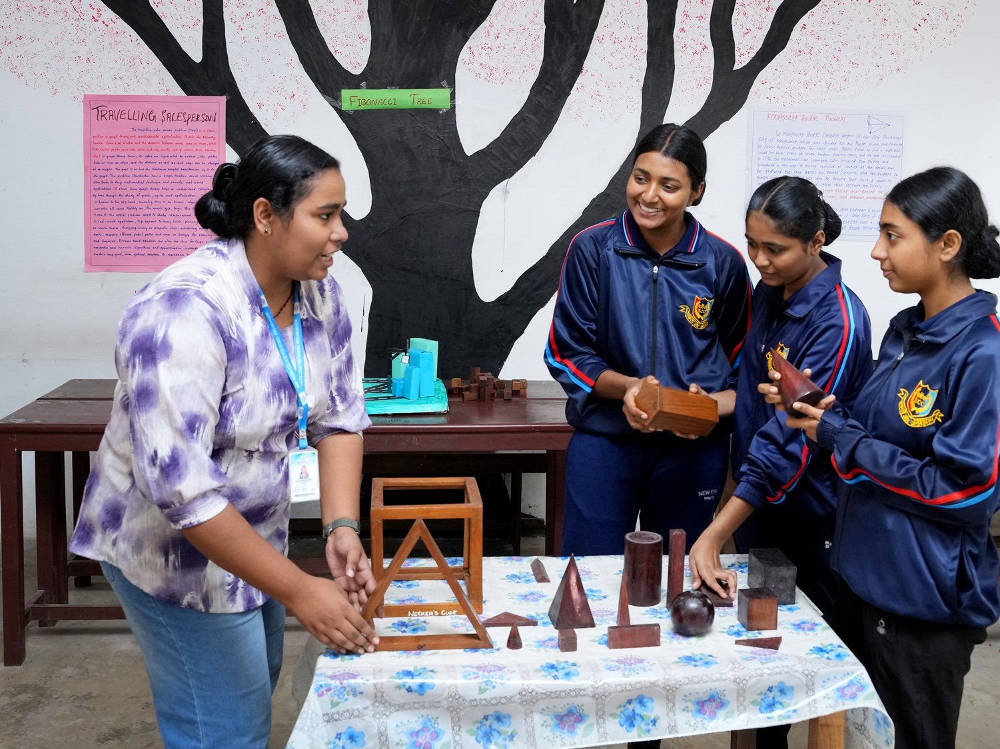
This stall demonstrates the beauty and applications of mathematics through models and problem-solving activities. It highlights the importance of mathematical thinking in science, technology, and daily life.
Visit Mathematics Department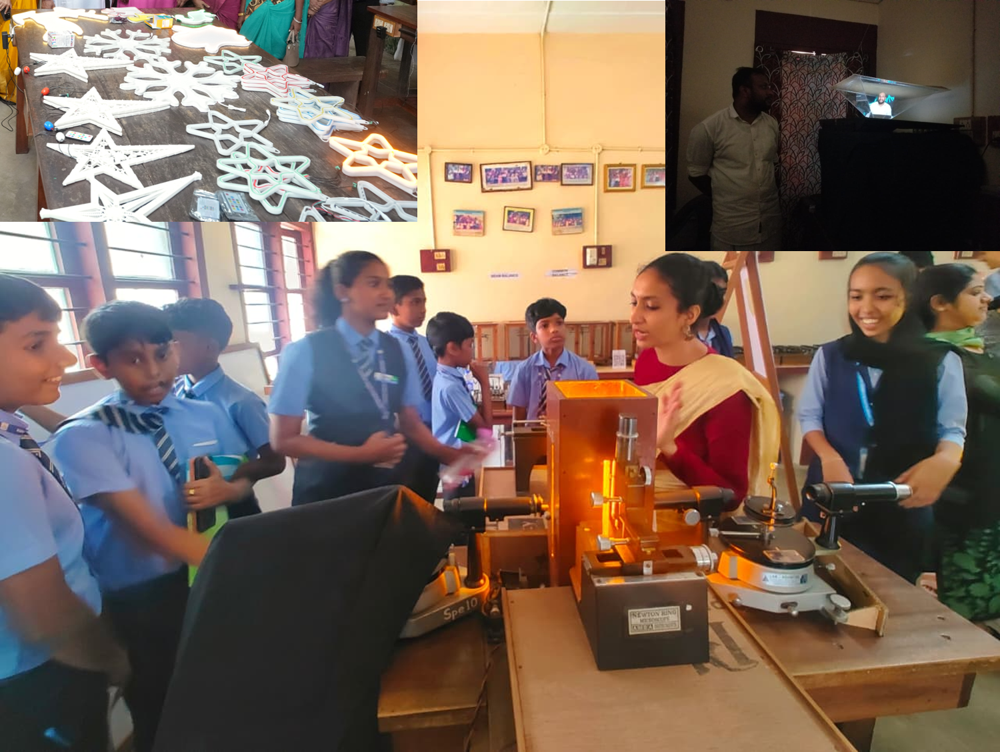
This stall showcases fundamental concepts and experiments in physics. It highlights the application of physical principles in technology, research, and everyday life. It also records the video of visitors and project it as hologram with a selection of backgrounds.
Visit Physics Department
This stall presents concepts related to tourism management and hospitality. It highlights career opportunities and the importance of sustainable tourism practices.
Visit Tourism and Hospitality Management Department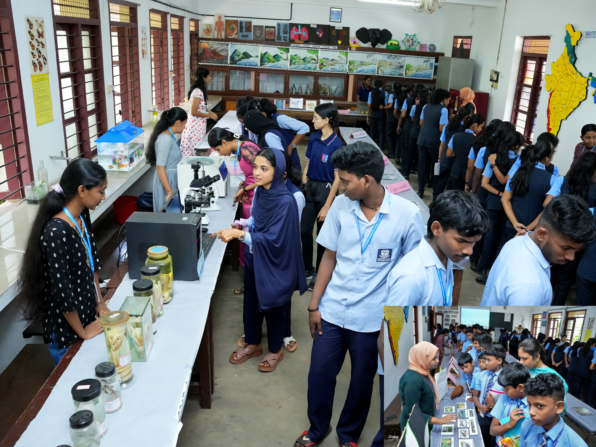
This stall presents advanced studies and research activities in zoology. It highlights postgraduate research, biodiversity studies, and modern biological techniques.
Visit Zoology Department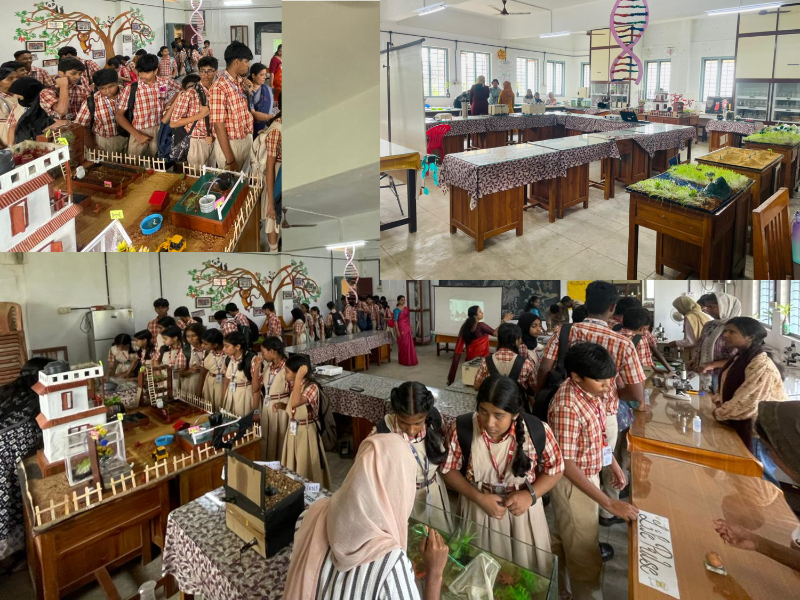
This stall presents postgraduate studies and research activities in zoology. It highlights advanced topics in animal biology, ecology, and biodiversity, along with research methods and career opportunities in life sciences.
Visit Zoology (Postgraduate) Department
This stall displays preserved specimens, models, and exhibits related to animal diversity and anatomy. It helps visitors understand classification, evolution, and the importance of zoology in biodiversity conservation.